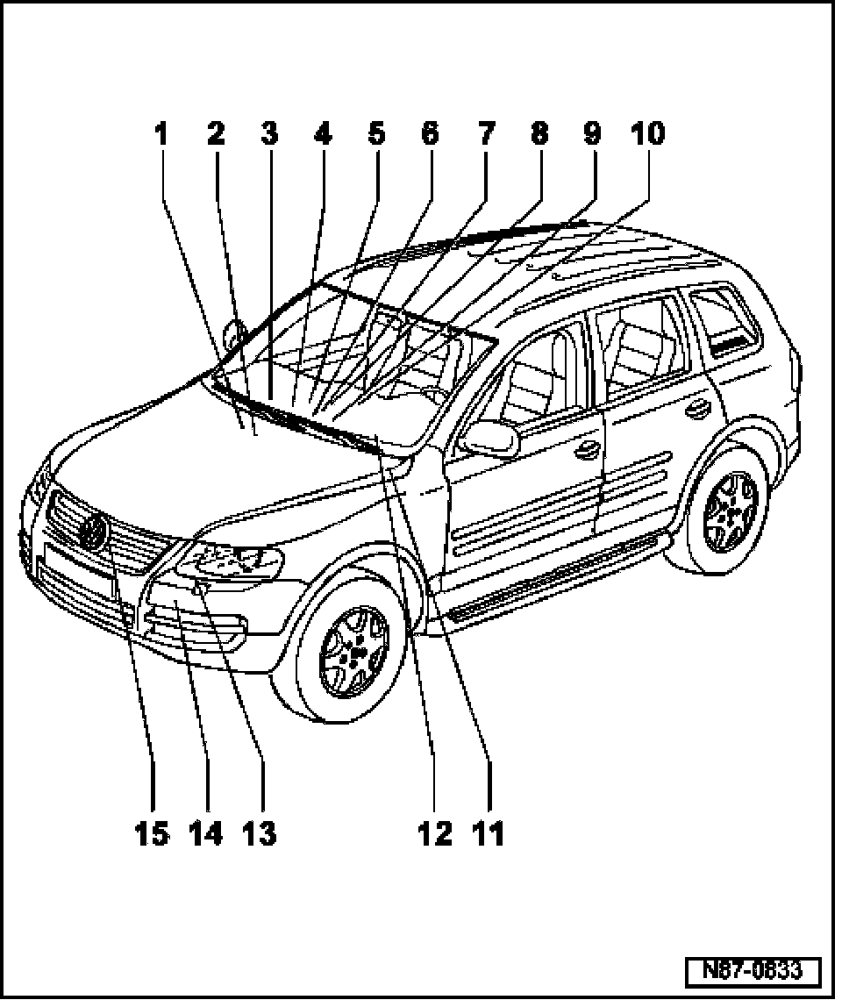

Climatronic Components, Overview
Climatronic Components, Overview

1. High Pressure Sensor -G65-
2. Fresh Air Intake Duct Temperature Sensor -G89-
- Removing and installing temperature sender -G89-
3. Front Blower Regulation Sensor (Bitron) -G462-
4. Front Blower Regulation Motor (Bitron) -V305-
5. Sunlight Photo Sensor -G107-
6. Right Footwell Vent Temperature Sensor -G262-
7. Evaporator Temperature Sensor -G308-
8. Right Front Upper Body Outlet Temperature Sensor -G386-
9. Left Front Upper Body Outlet Temperature Sensor -G385-
10. Climatronic Control Module -J255-
- Climatronic Control Module -J255-, A/C Control Head -E87- and Instrument Panel Interior Temperature Sensor -G56- with Interior Temperature Sensor Fan -V42- are integrated and cannot be serviced separately
11. Sensor for air quality -G238-
- Removing and installing air quality sensor
12. Left Footwell Vent Temperature Sensor -G261-
13. A/C Compressor Regulator Valve -N280-
- Removing and installing compressor
14. Refrigerant Temperature Sensor -G454-
15. Outside Air Temperature Sensor -G17-